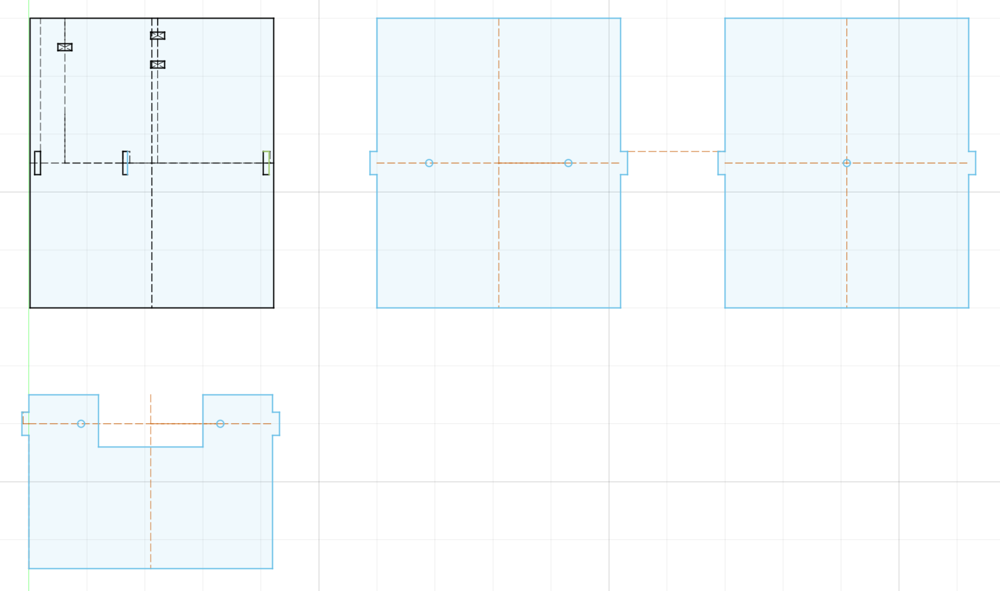
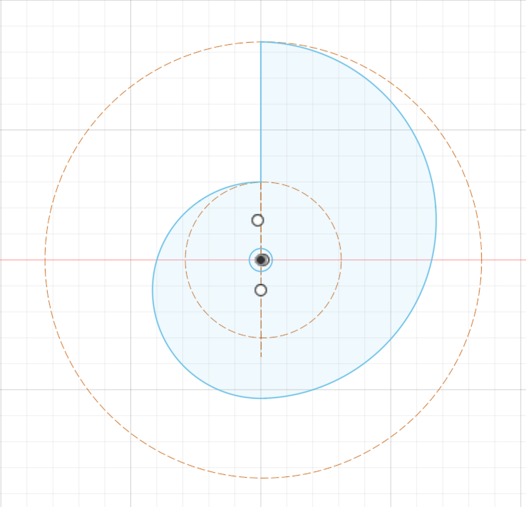
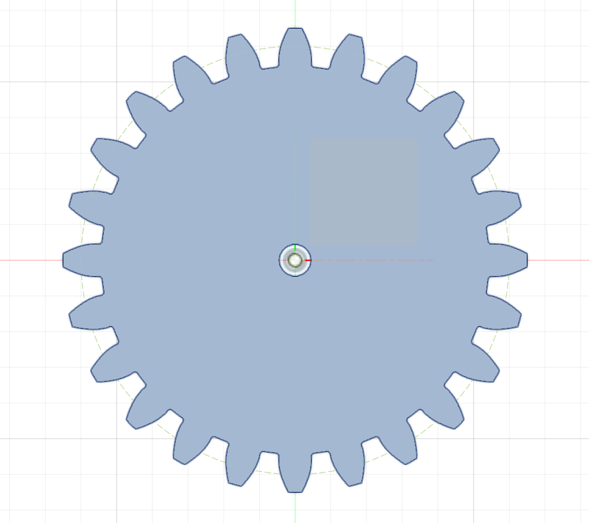
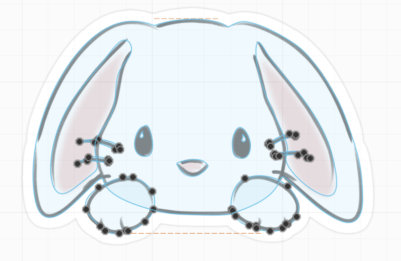
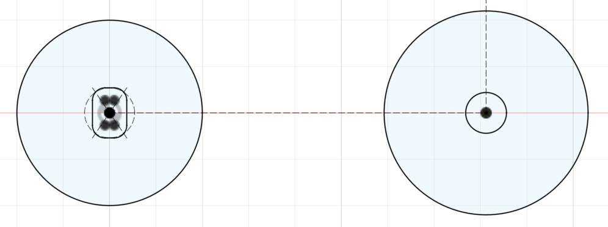
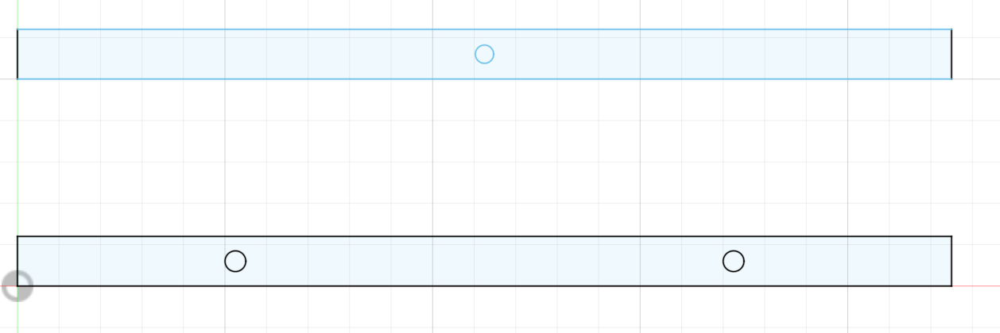
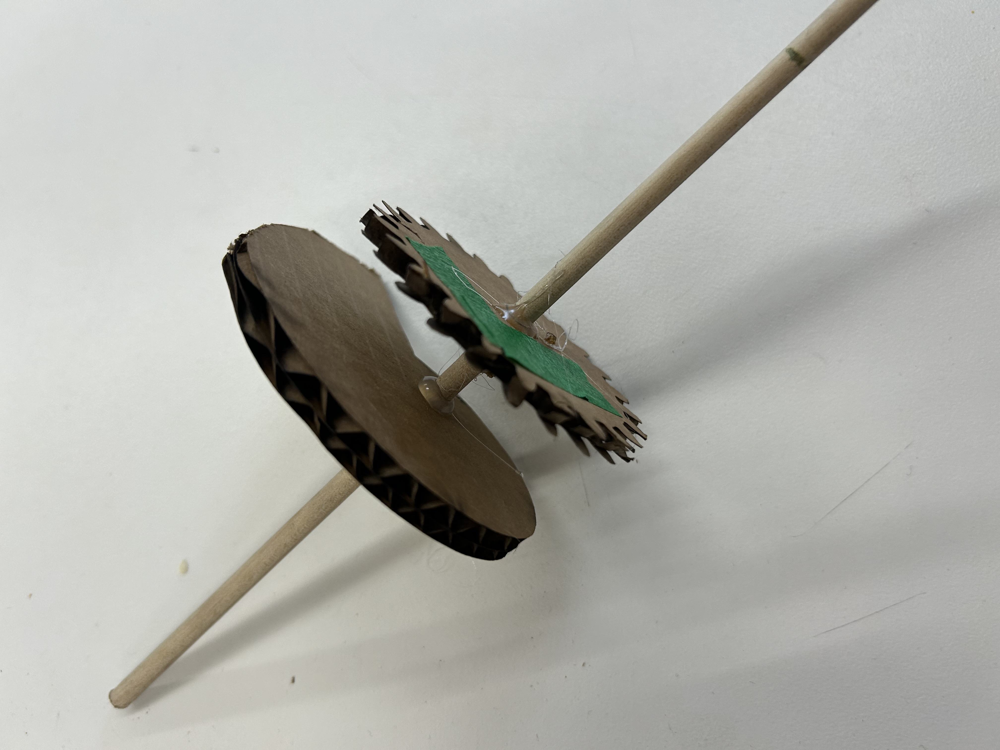
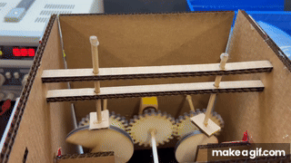
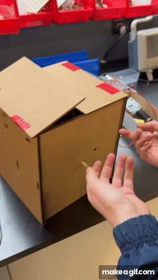

<div class="textcontainer">
<p class="margin"> </p>
<h3>Week 3: Hand Tools and Fabrication via Kinetic Sculpture</h3>
Oh my goodness this week took it out of me! So many new things for me to experiment with. You'll be incredibly surprised to hear that I spent no less than 14 hours this week planning my kinetic sculpture and struggling to actualize it. Believe me when I say I, too, am baffled at the result (or lack thereof).
However, I learned so so much. I have structured this week's documentation as such: 1) The concept, 2) the assembly + all the new considerations that came along the way, 3) the result as of Wednesday night, 4) my next steps, and 5) my takeaways (this part is mostly for my own sake but potentially for future students who too have no idea how to build things!). For the sake of length, I will be concise and use bullet points when I can.
<br></br>
<h4>1) The Concept - Rabbit out of a Hat</h4>
Side note, I REALIZE RABBITS COME OUT OF THE HEAD HOLE OF THE HAT. I didn't think about that.
<p>The main components are:</p>
<ul>
<li>Need three snail cams but only one motor so connected each snail cam to a spur gear, where the middle is connected to motor.</li>
<li>All spur gears are of the same size to align timing of each motion</li>
<li>Two outer snails work to open the top of the hat (like opening a cardboard delivery box)</li>
<li>Middle snail works to pull the rabbit up out of the hat</li>
<li>Two side snails will be on same xz plane but middle snail will be staggered away from motor so that none of the snails run into each other </li>
</ul>
<p>The structural integrity is composed using:</p>
<ul>
<li>Four walls. The back wall attaches to the motor (with a little bench for it to slip into) and has two holes for the dowels of the side snails to go through. The front wall has a hole for the dowel of the center snail to go through.</li>
<li>Dowels will move up and down on top of all snails, but need two parallel (in z-direction) support beams for them to go through or they won't stablize. Side walls will have holes for these beams to go through. </li>
<li>Middle snail would hit the dowels holding the side snails and spur gears so those will need to get shortened. Insert shorter wall before the middle snail for those dowels to go through, and cut out space for middle snail dowel. </li>
<li>A piece to attach to the motion component of the motor and then to the dowel of the middle snail (two differently shaped holes)</li>
</ul>
<p>The components on Fusion including the four and a half (shorter one at bottom included) walls, snails, spur gears, stability rods (support beams) for the vertical dowels, motor connectors, and rabbit (pulled from the internet)</p>
<p> <p></p>
<p></p>
<p></p>
<p></p>
<p></p>
<p></p>
</p>
<h4>2) The Assembly etc</h4>
Unforutnately I forgot to take lots of photos of the process becuase I kept feeling like it was so not ready.
All the walls were fairly successful and I was mostly happy with the sizing of my snail cams. The outer snails were slightly too big to fit within the walls which confused me becuase I thought I accounted for it!
So was the large snail for the rabbit (which I was planning on making much larger so that the rabbit could come up high) but I realized two things (as I was falling asleep on Monday actually!):
1) the rabbit can't really go any higher than the hat flaps anyway even if the rabbit comes up in the center but the dowels raising the hat flaps would be pushing them from only halfway up them (making them raise higher than simply the max dowel hight for the smaller snails) and
2) if the snail is too big, there wouldn't be enough room for the stability rods to balance the dowels as they come up and down. This is also why in my original fusion (see above), I only have room for a single stability rod
even though in hindsight that would never have worked anyway.
We ran out of cardboard! So I wasn't able to laser cut the walls again to account for the new stability rod for the larger snail cam. So I was thinking that I would somehow workshop the another stability rod onto it by using a knife to cut out the appropriate holes in the all for it.
Same thing for the motor bench—I had to manually cut out holes for the piece to attach the back wall.
<p>Here is my first draft of the pair of cam gear duo, but the gears kept getting caught because they were flimsy and cardboard and too thin. The cam itself was also too thin to really hold the dowel. </p>
<p> <p></p></p>
Note that you can see that I used hot glue to stop the slipping on the dowel. That also was a difficult and important task because that meant that all the other gears had to be perfectly aligned when I hot glued them to the dowels.
<p> Then I transitioned to wood for the cams and gears (and motor connector because that kept getting deformed by the motor spinning and then losing it's grip). Once I liked where they were placed on the dowels, I not only hot glued them but also added a hot glue stopper in between the two walls that the dowels moved through so as to reduce as much movement as possible once the motor was on.
</p>
<p>Then I had to add the vertical dowels that would move up and down with the snail cams. This part was very finnicky. First they didn't slide on the cams well enough so I sanded the tips to be more curved.
They would also still not be confined enough in their vertical motion so I made new stability rods with tighter holes. To prevent them from just falling every time they didn't work on the cam, I added a glue stopper to the top.
Finally, I added these rectangular pieces to the bottoms of the dowels to give more surface area so that they wouldn't slip off. This worked!! #Thankubobby
</p>
<p>I attached flaps to the top of the box using duct tape as an easy joint (again, no more cardboard to just score them instead). The dowels were struggling to lift them very high, but they did end up being able to do so! In the video below, it's not aligned properly because the snail cams didn't start at the same orientation and the right vertical dowel needed some more tweeking but this is the idea.</p>
<p> And you're thinking, "But where is the animal??" Great question. I ran out of time, but now that I know so much more about the gears and cams and such, hopefully that will be doable. Note that the bunny must be attached at an offset from the vertical dowel so that it doesn't run into the stability rods running across.
</p>
<h4>3) The Result (as of 02/19/26)</h4>
It's really disappointing but also, it moved! and there is a clear future...
<p> <p></p> </p>
<p> <p></p> </p>
<h4>4) Next Steps</h4>
<ul>
<li>Use wood for the stability rods because they keep bending when it's cardboard. </li>
<li>Align the snail cams initially so they start at the same orientation and fix the right side vertical dowel</li>
<li>Make the rabbit and attach it to a middle vertical dowel on a middle snail cam</li>
<li>Reprint the sides so they can accomodate two stability rods for the rabbit dowel</li>
<li>Make the little rectangles at the bottoms of the vertical dowels again (out of wood?) but laser cut them properly so they are symmetric. This might help reduce their spinning.</li>
<li>Add little rectangles to the tops of the vertical dowels used to lift the hat to add more strength. Preferably make these out of wood</li>
</ul>
<h4>5) Takeaways</h4>
<ul>
<li> Wood is so much sturdier and smoother. Anything that needs to hold something that moves, should not deform, or that moves and interacting with another moving thing—wood!</li>
<li> I should think about surface area more</li>
<li> DO NOT HOT GLUE UNLESS YOU ARE ABSOLUTELY SURE YOU'RE DONE</li>
<li> Reduce uncontrolled range of motion of moving things as much as you can</li>
<li> Never use snail cams again. I even remember during lab last week thinking, "Who would ever use these?" and I feel that way currently. They take up so much horizontal space that the vertical motion you get from them is just not worth it. (im excited for the day I see their true purpose)</li>
<li> Not necessary but consider less bulky structural foundations. Did I need entire walls? Or would elevated panels have worked just fine? In this case, the structure also worked as my hat, but it would look more elegant if it had minimal bars as the structure instead and I built the hat around it.</li>
</ul>